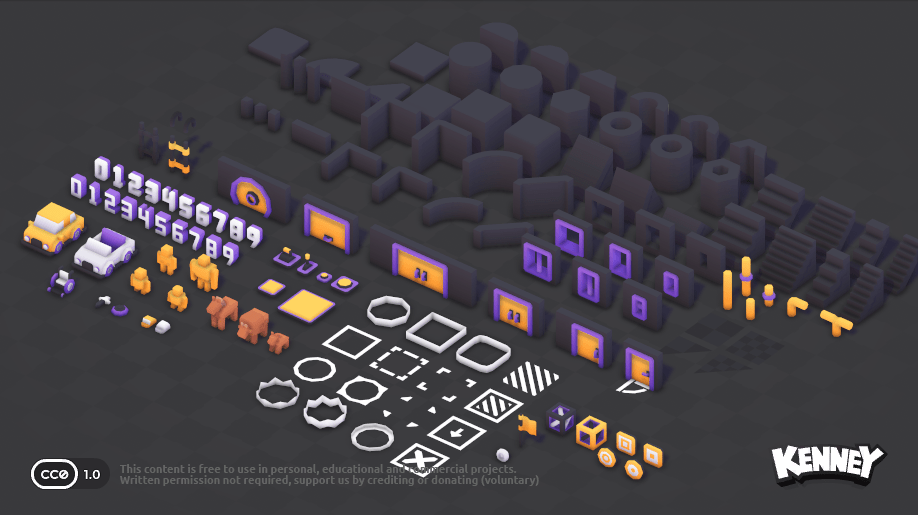
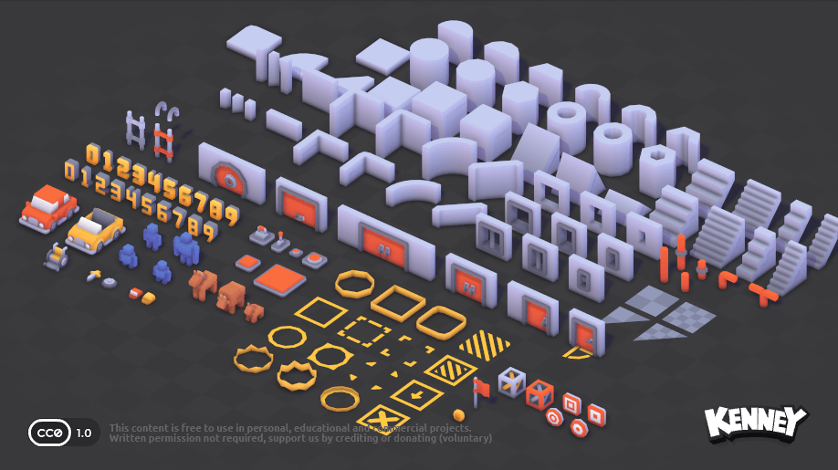
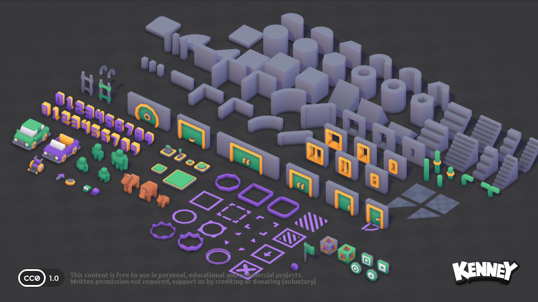
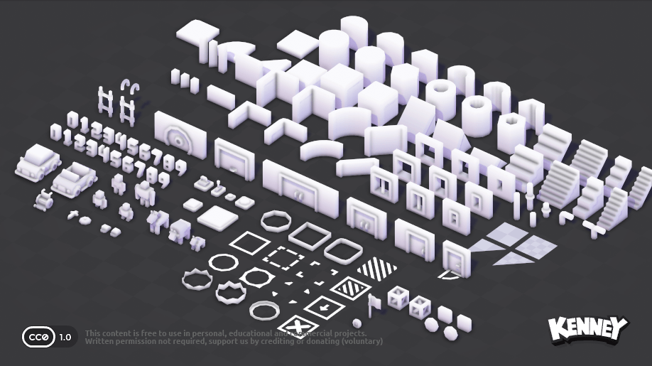

Godot • Digital Assets • AI Research Support
Building clean, testable digital asset prototypes for AI research workflows.
I create practical Godot-based prototypes that demonstrate asset importing, scene setup, UI labeling, basic scripting, collision testing, and visual quality review for interactive projects.

Featured Work
Godot Asset Review Prototype
Project Goal
Build a simple interactive scene that proves hands-on understanding of Godot project structure, asset handling, visual inspection, and prototype refinement.
What It Demonstrates
Asset importing, scene organization, simple player/camera movement, object interaction, collision checks, UI overlays, and export-ready project preparation.
Project Screenshots
Visual evidence from the Godot prototype


Capabilities
Practical skills shown through the prototype
Godot EngineScenes, nodes, project setup
GDScriptBasic scripting and interaction
Digital AssetsImporting, placement, scaling
UI SetupLabels, panels, buttons
QA ReviewAlignment, collisions, usability
DocumentationClear README and screenshots
Workflow
How I approach asset-focused prototypes
01
Import
Bring assets into the project and organize them clearly for testing.
02
Compose
Place assets in a scene with clean scale, spacing, and visual hierarchy.
03
Test
Check movement, collision, interaction, UI visibility, and visual consistency.
04
Refine
Adjust layout, labels, and behavior based on review findings.
Available for project support
Let’s build clean digital asset workflows.
Open to AI research support, asset review, game-engine prototyping, and structured visual QA tasks.